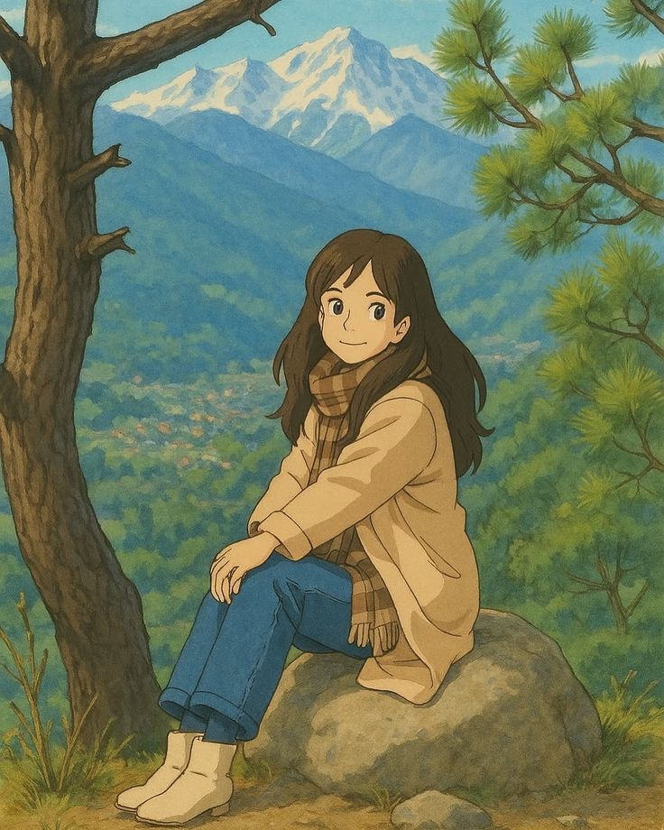
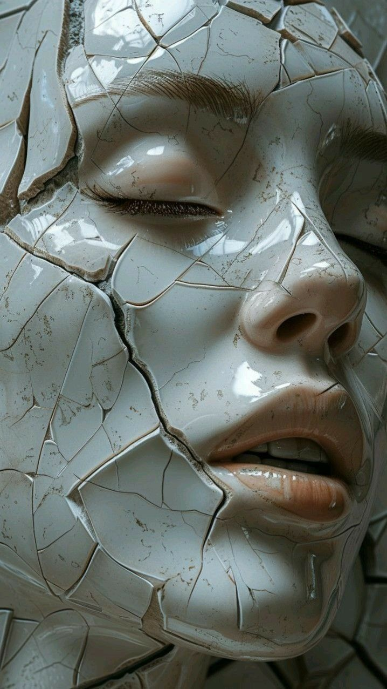

En este museo virtual presentamos obras generadas por inteligencia artificial. ¿Es la IA realmente capaz de crear arte?
¿Las máquinas podrían, eventualmente, equiparar la capacidad humana y sustituir a las personas en este mercado?

Representación artística estilo Estudio Ghibli.

Escultura creada por inteligencia artificial.Pintura generada por IA, una reinterpretación del impresionismo.